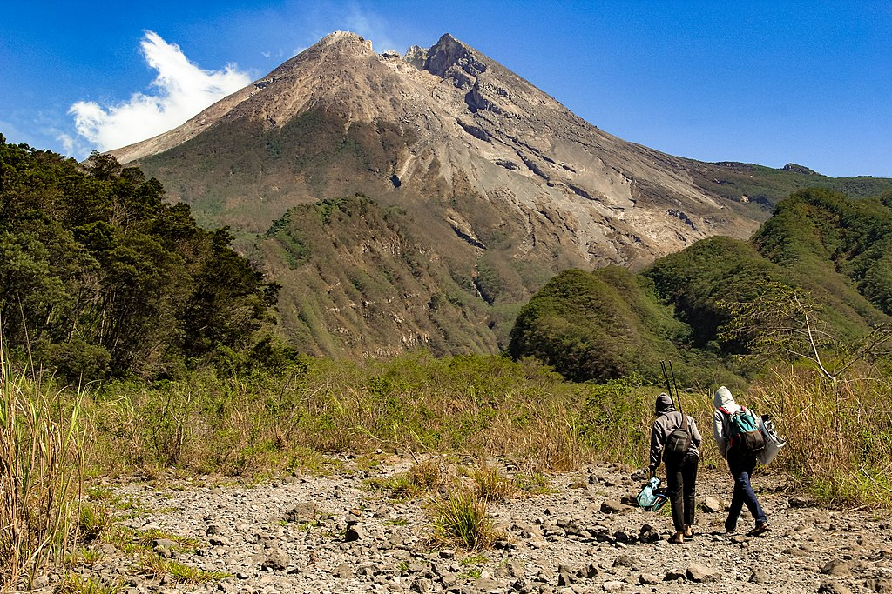
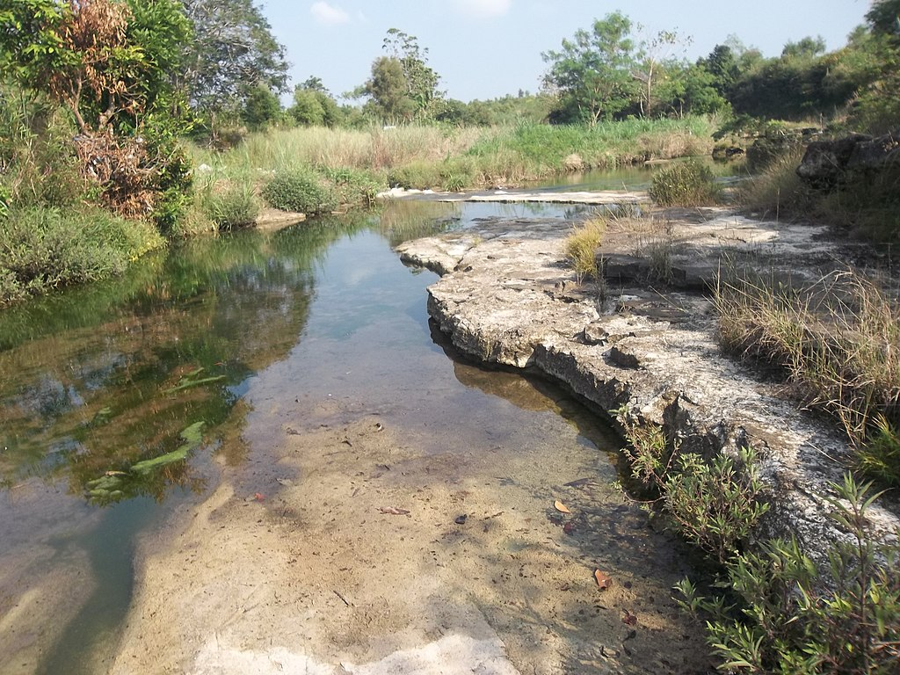
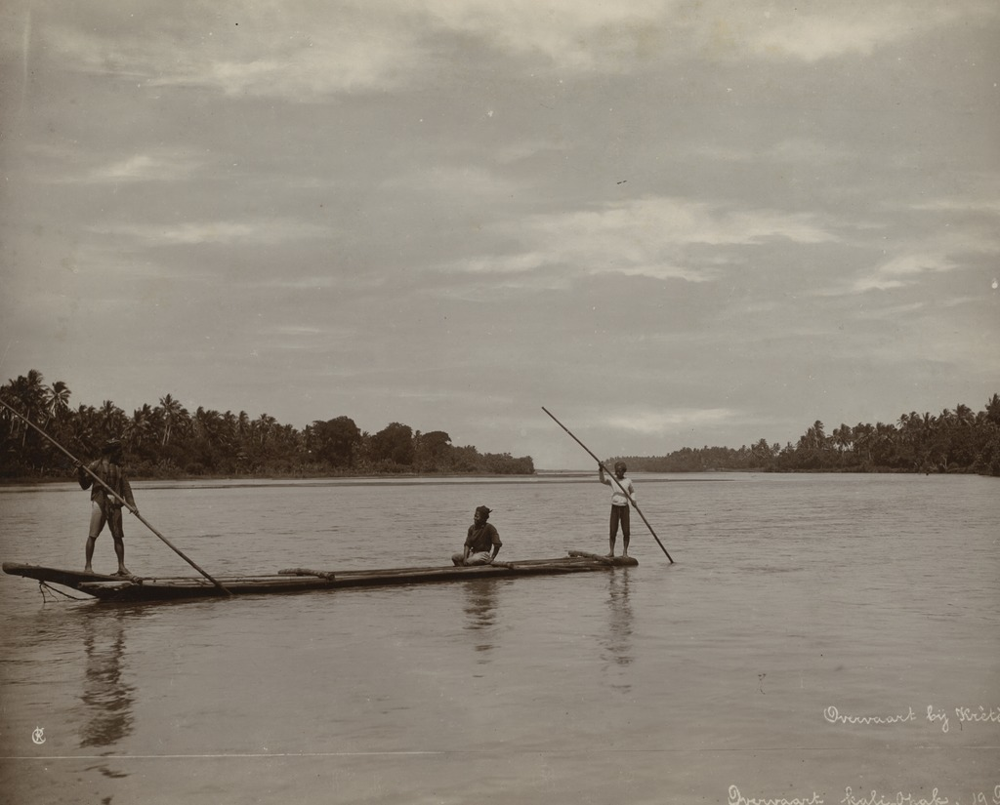

Kota besar di Indonesia yang masih mempertahankan konsep tradisional dan budaya Jawa
Sejarah
Sebelum Indonesia merdeka, Yogyakarta merupakan daerah yang mempunyai pemerintahan sendiri
atau disebut Zelfbestuurlandschappen/Daerah Swapraja, yaitu Kasultanan Ngayogyakarta Hadiningrat dan Kadipaten Pakualaman.
Kasultanan Ngayogyakarta Hadiningrat didirikan oleh Pangeran Mangkubumi yang bergelar Sultan Hamengku Buwono I
pada tahun 1755, sedangkan Kadipaten Pakualaman didirikan oleh Pangeran Notokusumo (saudara Sultan Hamengku Buwono II)
yang bergelar Adipati Paku Alam I pada tahun 1813. Pemerintah Hindia Belanda mengakui Kasultanan, dan Pakualaman sebagai
kerajaan dengan hak mengatur rumah tangganya sendiri yang dinyatakan dalam kontrak politik. Kontrak politik yang terakhir
Kasultanan tercantum dalam Staatsblaad 1942 Nomor 47, sedangkan kontrak politik Pakualaman dalam Staatsblaad 1941 Nomor 577.
Eksistensi kedua kerajaan tersebut telah mendapat pengakuan dari dunia internasional, baik pada masa penjajahan Belanda,
Inggris, maupun Jepang. Ketika Jepang meninggalkan Indonesia, kedua kerajaan tersebut telah siap menjadi sebuah negara
sendiri yang merdeka, lengkap dengan sistem pemerintahannya (susunan asli), wilayah, dan penduduknya.
Setelah Proklamasi Kemerdekaan Republik Indonesia (RI), Sri Sultan Hamengkubuwana IX dan Sri Paku Alam VIII menyatakan kepada
Presiden RI, bahwa Daerah Kasultanan Yogyakarta, dan Daerah Pakualaman menjadi wilayah Negara RI, bergabung menjadi satu kesatuan
yang dinyatakan sebagai Daerah Istimewa Yogyakarta (DIY). Sri Sultan Hamengkubuwana IX dan Sri Paku Alam VIII sebagai Kepala Daerah,
dan Wakil Kepala Daerah bertanggung jawab langsung kepada Presiden RI.
Geografis



DIY terletak di bagian tengah-selatan Pulau Jawa, secara geografis terletak pada 8º 30' - 7º 20' Lintang Selatan,
dan 109º 40' - 111º 0' Bujur Timur.
Berdasarkan bentang alam, wilayah DIY dapat dikelompokkan menjadi empat
satuan fisiografi, yaitu satuan fisiografi Gunungapi Merapi, satuan fisiografi Pegunungan Sewu atau Pegunungan
Seribu, satuan fisiografi Pegunungan Kulon Progo, dan satuan fisiografi Dataran Rendah.
Satuan fisiografi Gunungapi Merapi, yang terbentang mulai dari kerucut gunung api hingga dataran fluvial
gunung api termasuk juga bentang lahan vulkanik, meliputi Sleman, Kota Yogyakarta dan sebagian Bantul.
Satuan Pegunungan Selatan atau Pegunungan Seribu, yang terletak di wilayah Gunungkidul, merupakan kawasan perbukitan batu gamping dan bentang alam karst yang tandus, dan kekurangan air permukaan.
Satuan Pegunungan Kulon Progo, yang terletak di Kulon Progo bagian utara, merupakan bentang lahan struktural denudasional dengan topografi berbukit, kemiringan lereng curam, dan potensi air tanah kecil.
Satuan Dataran Rendah, merupakan bentang lahan fluvial (hasil proses pengendapan sungai) yang didominasi oleh dataran aluvial, membentang di bagian selatan DIY, mulai dari Kulon Progo sampai Bantul
yang berbatasan dengan Pegunungan Seribu.
Dua daerah aliran sungai (DAS) yang cukup besar di DIY adalah DAS Progo di barat, dan DAS Opak-Oya di timur.
Sungai-sungai yang cukup terkenal di DIY antara lain adalah Sungai Serang, Sungai Progo, Sungai Bedog,
Sungai Winongo, Sungai Boyong-Code, Sungai Gajah Wong, Sungai Opak, dan Sungai Oya.
Sosial Budaya
Kondisi sosial budaya di Daerah Istimewa Yogyakarta antara lain meliputi Kependudukan; Tenaga Kerja, dan Transmigrasi;
Kesejahteraan Sosial; Kesehatan; Pendidikan; Kebudayaan; dan Keagamaan
Kehidupan sosial masyarakat Kota Yogyakarta sekarang ini sudah bercampurbaur menjadi satu antara pribumi
dan masyarakat pendatang, antara tradisional dengan modern, antara desa dengan kota, antara kaya dan miskin
nyaris kabur perbedaan antara dua kelompok tersebut. Cuma pada status-status tertentu masih terlihat
membedakan antara yang atas dan yang bawah, Biasanya dijumpai di masyarakat kepegawaian yang ada struktur
dan yang “berdarah biru” atau berhubungan dengan kraton.
Saat ini Yogyakarta khususnya di wilayah perkotaan terdapat berbagai etnis penduduk dari seluruh Indonesia,
walau penduduk asli masih berada dalam komposisi teratas dan masih dominan dalam berbagai peran kemasyarakatan.
Penduduk pendatang dari berbagai suku ini membentuk semacam “miniatur culturnya Indonesia” di Yogyakarta.
Mereka datang ke Yogyakarta dengan berbagai kepentingan. Bidang pendidikan menjadi tujuan utama para pendatang
ke Yogyakarta, menyusul pekerjaan, perdagangan dan bidang-bidang lain termasuk sektor informal. Para pendatang ini
sebagaian besar merupakan penduduk musiman di Yogyakarta, seperti mahasiswa, buruh kerja, dan perantau lainya.
Secara administratif, banyak diantara mereka yang tidak terdata. Sehingga bisa dipahami bahwa secara definitif
problem jumlah penduduk jauh lebih besar dari yang tertuang dalam catatan statistik yang ada.
Pariwisata
Yogyakarta adalah daerah tujuan wisata kedua setelah Bali.
Pariwisata merupakan sektor utama bagi DIY. Banyaknya objek, dan daya tarik wisata di DIY telah menyerap kunjungan wisatawan,
baik wisatawan mancanegara maupun wisatawan nusantara. Pada 2010 tercatat kunjungan wisatawan sebanyak 1.456.980 orang,
dengan rincian 152.843 dari mancanegara, dan 1.304.137 orang dari nusantara. Bentuk wisata di DIY meliputi wisata
MICE (Meeting, Incentive, Convention and Exhibition), wisata budaya, wisata alam, wisata minat khusus, dan berbagai
fasilitas wisata lainnya, seperti resort, hotel, dan restoran. Tercatat ada 37 hotel berbintang, dan 1.011 hotel melati
di seluruh DIY pada 2010. Adapun penyelenggaraan MICE sebanyak 4.509 kali per tahun atau sekitar 12 kali per hari.
Keanekaragaman upacara keagamaan, dan budaya dari berbagai agama serta didukung oleh kreativitas seni, dan keramahtamahan masyarakat,
membuat DIY mampu menciptakan produk-produk budaya, dan pariwisata yang menjanjikan. Pada tahun 2010 tedapat 91 desa wisata dengan 51
di antaranya yang layak dikunjungi. Tiga desa wisata di kabupaten Sleman hancur terkena erupsi gunung Merapi sedang 14 lainnya rusak ringan.
Menurut Kepala Dinas Pariwisata Yogyakarta pada September 2014, angka kunjungan mencapai 2,4 juta wisatawan domestik dan 1,8 juta wisatawan manca negara.
Secara geografis, DIY juga diuntungkan oleh jarak antara lokasi objek wisata yang terjangkau, dan mudah ditempuh. Sektor pariwisata sangat signifikan
menjadi motor kegiatan perekonomian DIY yang secara umum bertumpu pada tiga sektor andalan yaitu: jasa-jasa; perdagangan, hotel, dan restoran; serta pertanian.
Dalam hal ini pariwisata memberi efek pengganda (multiplier effect) yang nyata bagi sektor perdagangan disebabkan meningkatnya kunjungan wisatawan.
Selain itu, penyerapan tenaga kerja, dan sumbangan terhadap perekonomian daerah sangat signifikan.